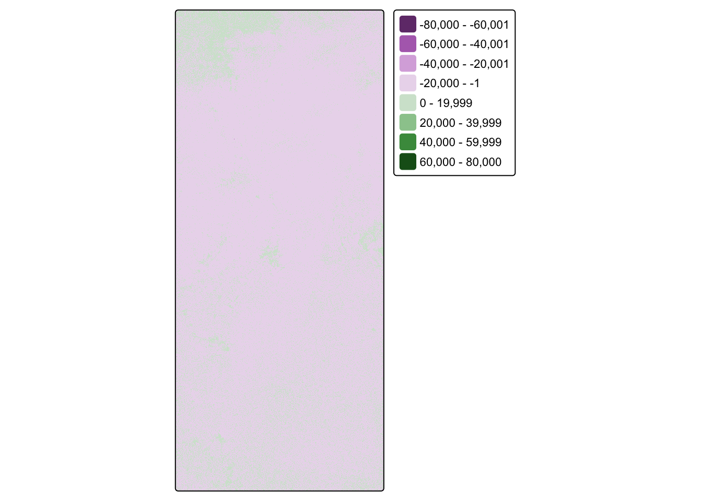

library(terra) # raster handling
library(tidyverse)
library(tmap) # map making
library(kableExtra) # table formatting
library(spData) # spatial data
library(spDataLarge) # spatial data
library(geodata) # spatial data
library(here)
library(stars) # to read data in
library(sf)
library(raster)Identifying_impacts_extreme_weather
Learning outcomes
This assignment will reinforce key concepts in geospatial analysis by practicing the following:
- load vector/raster data
- simple raster operations
- simple vector operations
- spatial joins
Background
Climate change is increasing the frequency and intensity of extreme weather events, with devastating impacts. “In February 2021, the state of Texas suffered a major power crisis, which came about as a result of three severe winter storms sweeping across the United States on February 10–11, 13–17, and 15–20.”1 For more background, check out these engineering and political perspectives.
In this assignment, you will identify the impacts of these series of extreme winter storms by estimating the number of homes in the Houston metropolitan area that lost power and investigate whether not these impacts were disproportionately felt.
Your analysis will be based on remotely-sensed night lights data, acquired from the Visible Infrared Imaging Radiometer Suite (VIIRS) onboard the Suomi satellite. In particular, you will use the VNP46A1 to detect differences in night lights before and after the storm to identify areas that lost electric power.
To determine the number of homes that lost power, you link (spatially join) these areas with OpenStreetMap data on buildings and roads.
To investigate potential socioeconomic factors that influenced recovery, you will link your analysis with data from the US Census Bureau.
Import Libraries
Reading in Data
texas <- st_read(here::here('data','ACS_2019_5YR_TRACT_48_TEXAS.gdb'),
layer ='ACS_2019_5YR_TRACT_48_TEXAS' )Reading layer `ACS_2019_5YR_TRACT_48_TEXAS' from data source
`/Users/marietolteca/Documents/MEDS/EDS-223L/eds-223-hw3/data/ACS_2019_5YR_TRACT_48_TEXAS.gdb'
using driver `OpenFileGDB'
Simple feature collection with 5265 features and 15 fields
Geometry type: MULTIPOLYGON
Dimension: XY
Bounding box: xmin: -106.6456 ymin: 25.83716 xmax: -93.50804 ymax: 36.5007
Geodetic CRS: NAD83homes <- st_read(here('data','gis_osm_buildings_a_free_1.gpkg'))Reading layer `gis_osm_buildings_a_free_1' from data source
`/Users/marietolteca/Documents/MEDS/EDS-223L/eds-223-hw3/data/gis_osm_buildings_a_free_1.gpkg'
using driver `GPKG'
Simple feature collection with 498795 features and 5 fields
Geometry type: MULTIPOLYGON
Dimension: XY
Bounding box: xmin: -96.50055 ymin: 29.00344 xmax: -94.53285 ymax: 30.50393
Geodetic CRS: WGS 84roads <- st_read(here('data','gis_osm_roads_free_1.gpkg'))Reading layer `gis_osm_roads_free_1' from data source
`/Users/marietolteca/Documents/MEDS/EDS-223L/eds-223-hw3/data/gis_osm_roads_free_1.gpkg'
using driver `GPKG'
Simple feature collection with 586056 features and 10 fields
Geometry type: LINESTRING
Dimension: XY
Bounding box: xmin: -96.70616 ymin: 28.84413 xmax: -94.34612 ymax: 30.69119
Geodetic CRS: WGS 84# Raster Data -
vnp_05 <- rast(here("data", "VNP46A1", "VNP46A1.A2021038.h08v05.001.2021039064328.tif"))
vnp_06 <- rast(here("data", "VNP46A1", "VNP46A1.A2021038.h08v06.001.2021039064329.tif"))
vnp_05_2 <- rast(here("data", "VNP46A1", "VNP46A1.A2021047.h08v05.001.2021048091106.tif"))
vnp_06_2 <- rast(here("data", "VNP46A1", "VNP46A1.A2021047.h08v06.001.2021048091105.tif"))Workflow outline
To complete complete the tasks of this assignment, you will need to break your analysis into the following key steps:
- find locations that experienced a blackout by creating a mask HINT: this will require creating a raster object for each day (2021-02-07 and 2021-02-16)
- Check CRS of VNP raster files, combine, find difference, into night light intensity caused by storm between dates of interest. :
- exclude highways from analysis
- identify homes that experienced blackouts by combining the locations of homes and blackouts
- identify the census tracts likely impacted by blackout
- Below is guidance and suggestions for each of these steps.
Tip For improved computational efficiency and easier interoperability with sf, I recommend using the stars package for raster handling.
Check CRS
# Transform CRS
# st_crs(texas)
# st_crs(homes)
#texas <- st_transform(homes, crs = st_crs(texas))
# Checking Extents:
if(st_crs(vnp_05) == st_crs(vnp_06)){
print("Extents match")
} else{
print("extents do not match")
}[1] "Extents match"# Check Boundaries of Rasters
# st_bbox(vnp_05) #xmin= -100, xmax= 30, ymin= -90, ymax=40
# st_bbox(vnp_06) # -100 20 -90 30
# st_bbox(vnp_05_2) # -100 30 -90 40
# st_bbox(vnp_06_2) # -100 20 -90 30 Creating Raster Objects
# Combining Rasters: Using xmin and xmax
vnp_feb07 <- merge(vnp_05, vnp_06)
vnp_feb16 <- merge(vnp_05_2, vnp_06_2)
# Checking if bounding box are the same
st_bbox(vnp_feb07)xmin ymin xmax ymax
-100 20 -90 40 st_bbox(vnp_feb16)xmin ymin xmax ymax
-100 20 -90 40 # Computing the Difference
vnp_change <- (vnp_feb07) - (vnp_feb16)
# Viewing shape of raster combined
tm_shape(vnp_change) +
tm_raster(col.legend = tm_legend(""))SpatRaster object downsampled to 4473 by 2237 cells.[scale] tm_raster:() the data variable assigned to 'col' contains positive and negative values, so midpoint is set to 0. Set 'midpoint = NA' in 'fill.scale = tm_scale_intervals(<HERE>)' to use all visual values (e.g. colors)
Reclassify the difference raster, assuming that any location that experienced a drop of more than 200 nW cm-2sr-1 experienced a blackout
- Assign
NAto all locations that experienced a drop of less than 200 nW cm-2sr-1 change
# Define the reclassification matrix
rcl_vnp <- matrix(c(-Inf, 200, NA, # values -Inf to 200 = NA
200, Inf, 1), # values 200 to Inf = 1
ncol = 3, byrow = TRUE)
# Apply the matrix using terra::classify
reclassified <- terra::classify(vnp_change, rcl = rcl_vnp)##vectorize the blackout mask hint: use st_as_sf() to convert from a raster to a vector and fix any invalid geometries with st_make_valid()
blackout_vector <- st_as_stars(reclassified)%>%
st_as_sf() %>%
st_make_valid()Crop (spatially subset) the blackout mask to the Houston area as defined by the following coordinates:(-96.5, 29), (-96.5, 30.5), (-94.5, 30.5), (-94.5, 29)
# Define bounding box coordinates
blackout_houston_bounds <- c(xmin = -96.5, xmax = -94.5,
ymin = 29, ymax = 30.5)
# Creating bbox and assign CRS
houston_bbox <- st_bbox(blackout_houston_bounds, crs = st_crs(vnp_feb07))
# Convert bbox to an sf polygon
houston_bbox_sf <- st_as_sfc(houston_bbox)
# Crop the vectorized blackout map to Houston area
blackout_houston <- st_intersection(blackout_vector, houston_bbox_sf)Warning: attribute variables are assumed to be spatially constant throughout
all geometriesre-project the cropped blackout dataset to EPSG:3083 (NAD83 / Texas Centric Albers Equal Area)?
# Reprojecting vector to EPSG:3083
blackout_houston_proj <- st_transform(blackout_houston, crs = 3083)
# Checking CRS
#st_crs(blackout_houston_proj)
tm_shape(blackout_houston_proj) +
tm_polygons()